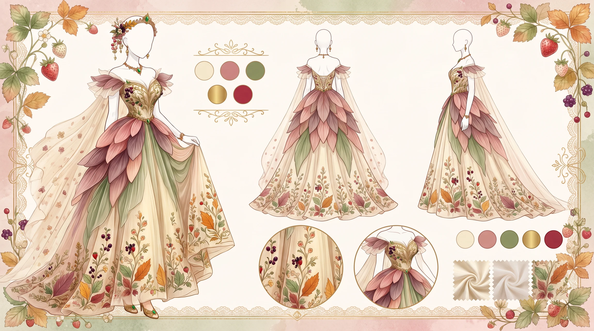

The Briarberry Ballgown

Outfit Prompt
Elegant harvest-inspired fantasy evening gown, ethereal botanical fashion, dusty rose, muted berry pink, soft sage green, warm cream, and antique gold color palette.
A fitted warm-cream bodice with a soft sweetheart neckline, delicate gold vine embroidery, tiny green leaves, and small berry motifs. Short off-the-shoulder flutter sleeves made from overlapping dusty-rose flower petals and sheer cream ruffles.
A delicate antique-gold vine belt around the natural waist, featuring a small emerald-green gemstone at the center.
A long, graceful A-line skirt with a flowing warm-cream base, decorated with layered flower-petal panels around the hips. The petals are large, individually shaped, and overlap like blooming flower petals, featuring dusty rose, muted berry pink, and mauve colors.
Long, soft sage-green fabric panels flow downward from beneath the pink petals, blending into the cream-colored lower skirt. The skirt has a light, natural silhouette rather than a large, rounded ball-gown shape.
The warm-cream lower skirt is decorated with detailed botanical embroidery, concentrated along the bottom half and hem. Delicate curling vines, autumn leaves, strawberries, dark berries, tiny wildflowers, and small blossoms grow upward from the hem. The leaves feature soft sage green, muted gold, warm orange, and reddish-brown autumn colors.
A long, lightweight translucent cream overskirt trails gently behind the gown, decorated with scattered tiny embroidered flowers and leaves.
Elegant low-heeled antique-gold shoes with small green gemstone decorations.
A delicate gold circlet with a central emerald-green gemstone, matching gold-and-green gemstone necklace, dangling earrings, and a thin botanical bracelet.
Small autumn leaves, miniature berries, and delicate wildflower hair ornaments.
Romantic enchanted-harvest fashion, fitted embroidered cream bodice, layered dusty-rose flower petals around the hips, flowing sage-green panels, cream botanical-embroidered skirt, graceful natural silhouette, delicate golden accessories.